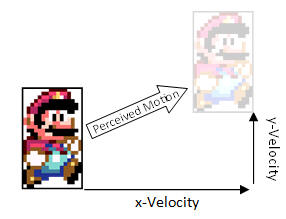
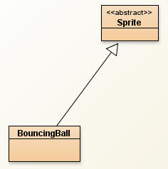
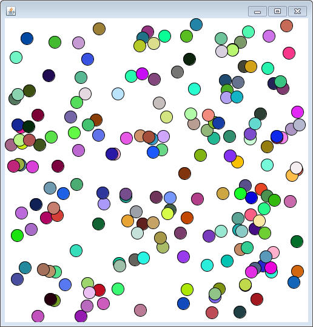

In video game development, a sprite is a graphic that can be moved around and manipulated on the screen. Each character that you see on the screen is represented with a sprite and they often act in a similar fashion. They have locations, dimensions, velocites, and a hitbox.
Instead of repeating the same code over and over each time we want to create a different character, let's create a parent class to hold a lot of the basic code and extend it any time that we want to create a new character.
This project will have many classes so make a new project to hold them all.
The BoundingBox class
During the if statements unit we created a project named JumpMan. We used it to represent a rectangle and it had some helpful methods that would be a good addition. Copy that class into your project. As a reminder, here's a list of the methods it should have:
public BoundingBox(int x, int y, int width, int height) public int getX() public int getY() public int getWidth() public int getHeight() public boolean containsPoint(int x, int y) public boolean overlaps(BoundingBox other)
The Sprite class
The Sprite class will be at the highest level of our hierarchy. It should represent the basic elements that every Sprite should have. The more methods that we have here, the less work we will have to do at all of the lower levels.
Instance Fields:
Every Sprite should have instance fields for its location, size and speed.
ints for width and height: Even though we don't need the width and height at this level, they will be useful to each of the classes later on, so we'll provide them in this class.
doubles for x and y: Not that even though a Sprite can only paint itself using an int as a location, x and y are kept as doubles. This will help small movements go smoothly. When it's time to paint, we can always cast to get an approximation of the actual location.
A BoundingBox to represent the boundary of this Sprite. This will be used to determine if the Sprite goes out of bounds.
doubles for the x-veloctiy and y-velocity: When moving diagonally, the motion can be broken down into an x component and a y component (don't tell your physics teacher that you're using vectors). The xVelocity and yVelocity variable will hold how much the Sprite will move in each direction every time the timer ticks.

Constructor:
public Sprite(double x, double y, int width, int height)
This constructor should set the four instance fields that are passed in as parameters. Note that the two velocities and the BoundingBox are not initialized. Since the BoundingBox is an object, it will be null. This is dangerous, so we'll have to keep it in mind.
Getters and Setters
Since there are a lot of variables here that we want subclasses to be able to
access, there are a lot of getter and setter methods to write. Implement the
following (remember, the more work you do here, the less you have to write
later:
public double getX() public double getY() public double getXVelocity() public double getYVelocity() public int getWidth() public int getHeight() public BoundingBox getBoundary() public void setX(double tmpX) public void setY(double tmpY) public void setXVelocity(double tmpVel) public void setYVelocity(double tmpVel) public void setWidth(int tmpWidth) public void setHeight(int tmpHeight) public void setBoundary(BoundingBox bound)
Utility Methods:
Moving: Other than the basic getters and setters. Sprites should have a few methods to bring everything together.
public void move()
When this method is called, the Sprite needs to move. All you need to do is add the xVelocity to the x coordinate and add the yVelocity to the y coordinate.
Updating: Sprites will all be controlled by a timer that continuously update the Sprite. This is the engine that drives the whole Sprite. For now, make it do the following (Note: it will not compile yet):
public void update()
{
this.move();
this.processBoundary();
}
Planning Ahead with Abstract Methods:
The Sprite class is not really meant to be complete on its own. At this level we don't know what this sprite is going to look like or how it's going to interact with its boundary, but for polymorphic purposes we need to have them declared at this level (otherwise the update method will never compile). Add the following abstract methods:
public abstract void paintSelf(PaintBrush brush); public abstract void processBoundary();
Now that the Sprite class has abstract methods, make sure you go to the header and delcare it as an abstract class. At this moment the Sprite class should compile.
The BouncingBall Sprite

Our first Sprite will be a relatively simple one. It will be a randomly colored circle that will go in a random direction at a random speed. The way that it interacts with it's boundary is by bouncing when it collides with it.
Create a class named BouncingBall that extends Sprite. Remember that by extending Sprite we're inheriting all of the instance fields from Sprite, but we don't have direct access to them. We will need to get creative with the inherited methods when we want to change them (that's why there's so many).
Instance Fields: The only new instance fields will be three ints for red, green, and blue values. All the other instance fields are inherited.
Constructor: Add a constructor with the following header:
public BouncingBall(BoundingBox bounds)
When the BouncingBall is constructed, it should be given an already constructed BoundingBox. This will give you a foundation to help you with your randomizing. The first call should be to the super constructor with an x and y or 0,0 (to be changed later) and a width and height of 20. After that it's time to set up the instance fields in the following manner:
- The red, green, and blue instance fields should be randomized from 0-255. These are the only variables that you can access directly.
- x and y should be randomized so that they are within the BoundingBox that was passed into as a parameter. The range is the width/height of the box, while the minimum values are the x/y of the box.
- The x and y velocities should be randomized to values from -8 to +8.
- Don't forget to call the inherited setBoundary method to officially set the instance field.
New methods:
We're going to want to change the direction of the BouncingBall in two different ways:
public void horizontalBounce() public void verticalBounce()
To bounce horizontally, you simplly need to set the xVelocity to its opposite. Vertically would change the yVelocity.
Overriding the abstract methods:
Before we can construct a BouncingBall object, we need to override the two abstract methods that are inherited.
paintSelf: Override the paintSelf method so that it draws a circle using the inherited x,y,width, and height. You will need to cast the x and y in order to fit with the fillOval method. Use your red, green, and blue instance fields to set the color.
processBoundary: Override the processBoundary method so that it causes the BouncingBall to change direction when it hits the boundary.
Start by calling the getBoundary method so that you're able to figure out the x values of the left and right side as well as the y values of the top and bottom side.
If any part of the ball goes over the left or right side, you must do two things:
1) Bounce Horizontally using the method you created.
2) Set the x value of the BouncingBall so that it is up against the boundary. For the right side you will have to take the width of the BouncingBall and the boundary into account.
Use two if statements to accomplish this, and then two more for the top and bottom of the boundary.
The SpriteViewer class:
Sprites are not meant to function completely on their own. They will need the help of SaccoObject's built in timer and other feature. You have seen this a few times before; the SpriteViewer will handle an array of Sprites. When painting, it will loop and have all the Sprites paint. When the timer ticks, it will call the update method of all the Sprites. This will cause the movement. There is also a launch method that will make sure that the window is visible and the timer is started. We are using Sprites instead of specifically BouncingBalls because there are more Sprites to come.
import sacco.*;
public class SpriteViewer extends SaccoObject
{
private Sprite[] sprites;
public SpriteViewer(Sprite[] sprites)
{
this.sprites = sprites;
}
public void paintWindow(PaintBrush brush)
{
for(int i =0; i<sprites.length; i++)
sprites[i].paintSelf(brush);
}
public void onTimerTick()
{
for(int i =0; i<sprites.length; i++)
sprites[i].update();
}
public void launch()
{
this.setVisible(true);
this.start();
}
}
public void onMousePress(MouseEvent m)
We are going to have many Sprites all over the place and we need to have a way to get them back when we need to. Add an onMousePress method to the SpriteViewer class that will loop through all of the Sprites and set their x and y values to the location of the mouse click. Since the x and y are the upper-left, subtract half the width or height to help it be centered on the mouse click.
Test your program with the following runners:
public static void bounceRunner()
{
BouncingBall[] orbs = new BouncingBall[250];
for( int i =0; i<orbs.length; i++)
{
orbs[i] = new BouncingBall( new BoundingBox(0,0,500,500));
}
SpriteViewer view = new SpriteViewer(orbs);
view.launch();
}
public static void bigBounceRunner()
{
BouncingBall[] orbs = new BouncingBall[250];
for( int i =0; i<orbs.length; i++)
{
orbs[i] = new BouncingBall( new BoundingBox(150,150,200,200));
}
SpriteViewer view = new SpriteViewer(orbs);
view.launch();
}
